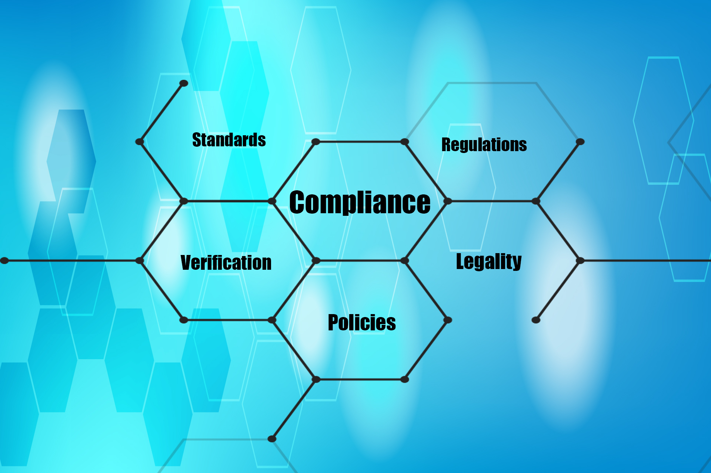

Legal Due Diligence
Legal due diligence is a critical part of any merger and acquisition transaction as well as for an initial investment in a foreign country that has different investment and commercial laws. AbnetLaw offers its multinational medium and small firms and entrepreneurs a best-in-class tailored legal due diligence service for their business transactions and interests in Ethiopia.
Our due diligence services are focused on providing critical and adequate information after collecting all available information on an individual, company, or business deal in question, to help our clients to understand the risks associated with their investment and the cost-effectiveness of a business transaction.
The goal of our due diligence service is to uncover and assess the strengths and weaknesses of a transaction, as well as to evaluate the legal risks and benefits of it and the best method to mitigate any potential or unanticipated risks.
Please contact us for more information about our legal due diligence service.